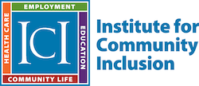

Nationwide, Community Development Financial Institutions (CDFIs) and similar organizations are positively impacting underserved communities’ access to affordable credit and capital. A marginalized subgroup within those communities are often people with disabilities.
To further support CDFIs to increase their impact and reach to people with disabilities in the communities they serve, the CDFI Fund offers this training and technical assistance program through their Capacity Building Initiative.
What Types of Training and Technical Assistance are Offered?
CDFIs and similar organizations that join this initiative will have access to:
- Individualized technical assistance, focused on addressing your organization’s specific capacity building needs to serve people with disabilities
- In-person trainings that bring together certified and uncertified CDFIs from across the country for knowledge sharing, skill building, and practical action planning (with scholarships available for travel and lodging costs)
- Webinars on a variety of topics related to servicing individuals with disabilities Peer-to-peer learning opportunities through a community of practice
Who are the Training Providers?
The CDFI Fund has selected BCT Partners and its partner, the Institute for Community Inclusion (ICI), to deliver training and technical assistance for this initiative throughout the calendar year 2019.
BCT Partners is a national, multi-disciplinary consulting firm that delivers a full range of research, consulting, training, technology, and analytics services. Our mission is to provide insights about diverse people that lead to equity. Our vision is a world where a greater understanding of diverse people leads to equity. By 2022, we endeavor to be a national leader in helping organizations make better decisions, improve outcomes and amplify their impact toward a more equitable society. BCT is a minority-owned and operated, Federal 8(a) joint venture, small disadvantaged business enterprise and one of the leading firms in the country with expertise in the following markets: housing and community development, economic development, workforce development, children and families, health, pharmaceuticals and life sciences, education, and energy.

The Institute for Community Inclusion (ICI) at UMass Boston offers training, clinical and employment services, conducts research, and provides assistance to organizations to promote inclusion of people with disabilities in school, work, and community activities. For over 40 years, ICI has worked to ensure that people with disabilities have the same opportunity to dream big, and make their dreams a fully included, integrated, and welcomed reality. As a leader not only in Massachusetts, but also nationally and internationally, ICI strives to create a world where all people with disabilities are welcome and fully included in valued roles wherever they go, whether a school, workplace, volunteer group, home, or any other part of the community. All of ICI's efforts stem from one core value: that people with disabilities are more of an expert than anyone else. Therefore, people with disabilities should have the same rights and controls and maintain lives based on their individual preferences, choices, and dreams.
Available Training & Technical Assistance
View the Upcoming Trainings section of this webpage to view currently available opportunities including online and in-person training events.
Upcoming Trainings
Training Title: XX
Date & Time: XX
Description: XX
Training Type: XX [Webinar, In-Person, Virtual Meeting]
Registration
Eligible participants include both certified CDFIs and uncertified organizations that have previously applied for the CDFI Assistance Program Technical Assistance award.
Register to join by completing this online registration. The registration should take less than 10 minutes to complete. Please note that the registration is required as it includes important questions about your capacity building needs and interests. Your responses will allow training providers to develop and deliver a program that is responsive to the needs of you and your CDFI peers.
Register now! Please note that BCT Partners and ICI will follow up with opportunities to register for individual webinars and in-person workshops at a later date.
Link to registration: (LINK TBD via Qualtrics/ SurveyGizmo)
Related Resources & Announcements
XXXXXX [ this would contain links to PDFs or hyperlinks]
If you have questions about this initiative or need assistance with the registration, please contact us [link to contact form or direct email].